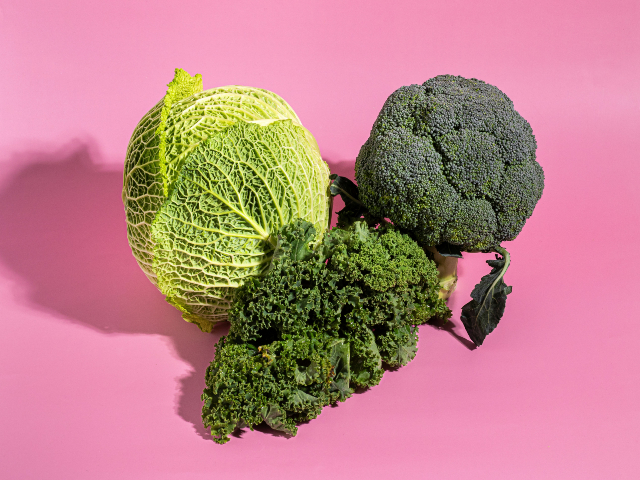
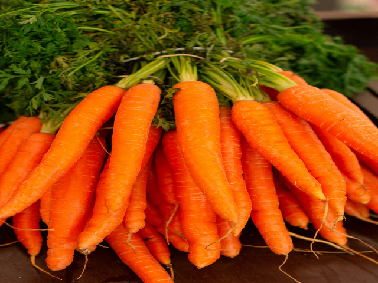
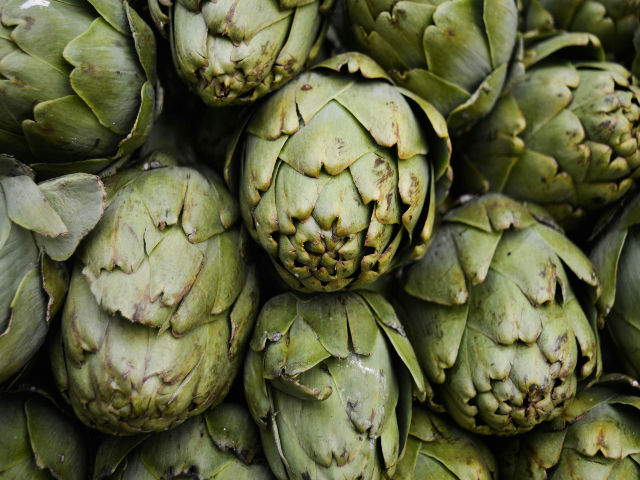
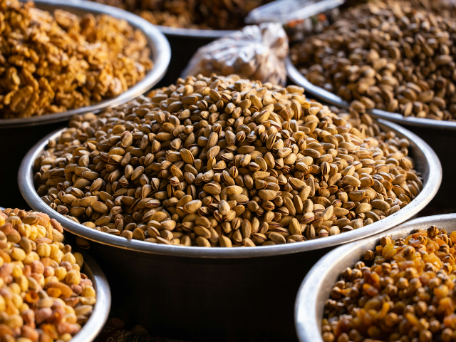
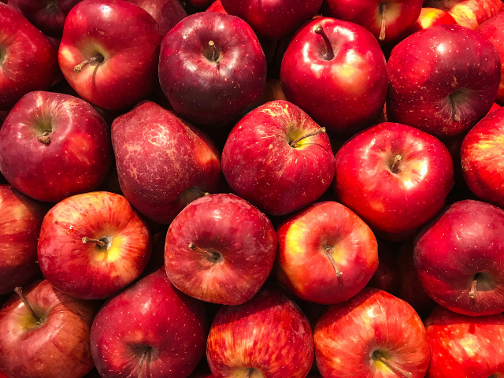

Información productos
Producto: Repollos y brócolis.

- Tipo de producto: Verdura.
- Producto(s): Repollo, Brócoli.
- Descripción: Nuestro brócoli y repollo se mantienen frescos en refrigeración.
Brindamos productos recién cosechados, listos para disfrutar en su plenitud de sabor y
nutrientes.
- Origen: Cerrillos, Región Metropolitana.
- Nombre productor: Tulio Triviño
- Email productor: mejorconductor31@minutos.com
- Número celular productor: +569 1111 1111
Producto: Zanahorias.

- Tipo de producto: Verdura.
- Producto(s): Zanahoria.
- Descripción: Nuestras zanahorias se mantienen frescas en un ambiente fresco y seco.
Ofrecemos zanahorias recién cosechadas, que conservan su crocancia y dulzura natural.
Ideales para acompañar tus platos favoritos o disfrutar como snack saludable.
- Origen: Temuco, Región Araucanía.
- Nombre productor: Juan Carlos Bodoque
- Email productor: reporteroestrella31@minutos.com
- Número celular productor: +569 7777 7777
Producto: Zanahorias.

- Tipo de producto: Verdura.
- Producto(s): Alcachofa.
- Descripción: Nuestras alcachofas son frescas y de alta calidad.
Directamente de la huerta a tu mesa, estas alcachofas están listas para ser cocinadas
y disfrutadas en una variedad de platos deliciosos.
- Origen: Puerto Montt, Región Los Lagos.
- Nombre productor: Guaripolo
- Email productor: mejorpersonaje31@minutos.com
- Número celular productor: +569 3131 3131
Producto: Almendras y avellanas.

- Tipo de producto: Fruta.
- Producto(s): Alemdra, Avellana.
- Descripción: Nuestras almendras y avellanas son una delicia crujiente y llena de sabor.
Cuidadosamente seleccionadas y empacadas, estas nueces son el snack perfecto para
disfrutar en cualquier momento del día. ¡Saborea la frescura y la calidad en cada bocado!
- Origen: Arica, Región Arica y Parinacota.
- Nombre productor: Juanín Juan Harry
- Email productor: productorcoordinador31@minutos.com
- Número celular productor: +569 1234 1234
Producto: Manzanas.

- Tipo de producto: Fruta.
- Producto(s): Manzana.
- Descripción: Nuestras manzanas son frescas y jugosas, directamente de nuestros árboles a tu hogar.
Disfruta de la dulzura natural y el crujido refrescante de estas deliciosas frutas.
Perfectas para comer solas como snack o para agregar un toque de frescura a tus recetas favoritas.
- Origen: Concepción, Región Bio-Bio.
- Nombre productor: Patana
- Email productor: estudiantepractica31@minutos.com
- Número celular productor: +569 9999 9999
Volver a la portada.
{kind=link}
{kind=link}
{kind=link}
{kind=link}